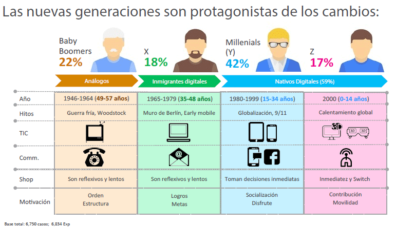

¿A qué generación perteneces?
La base de toda estrategia de marketing es identificar nuestro nicho de mercado, conocer a nuestro público, ya que, tenemos que tener en cuenta que las tendencias globales afectan a la mentalidad y al comportamiento de nuestro target, provocando un cambio en la manera en que compran.
Una forma de segmentar es a través de las generaciones realizado por Kotler y Keller en 2002. En un principio, esta segmentación se realizaba en base a elementos económicos y culturales. Hoy en día, esta segmentación se basa en la edad o generación a la que pertenecen las personas.
Actualmente, existen 4 generaciones dependiendo de la edad:
- Generación sin nombre: antes de 1945.
- Generación Baby Boomers: entre 1946 y 1964
- Generación X: entre 1965 y 1979
- Generación Millenials: entre 1980 y 1999
- Generación Z: entre el 2000 en adelante.
